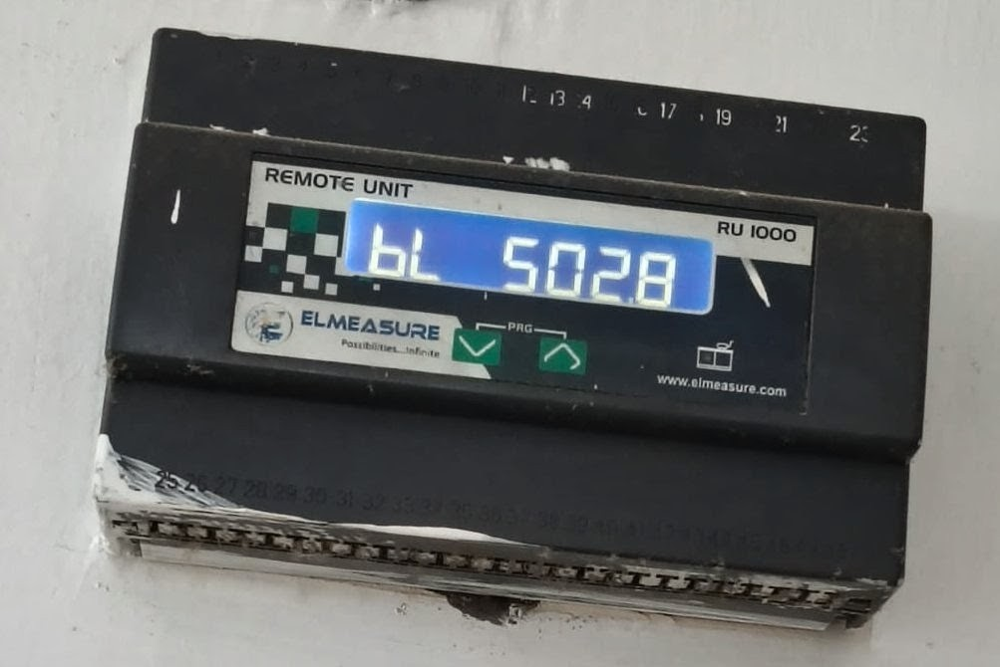
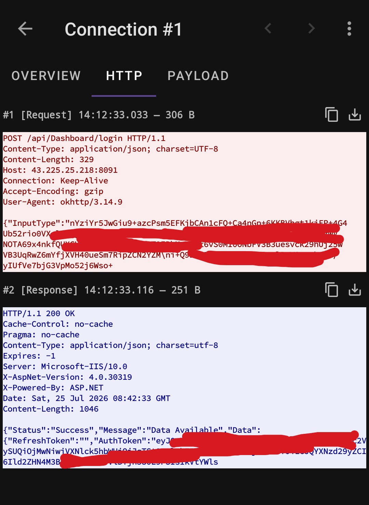
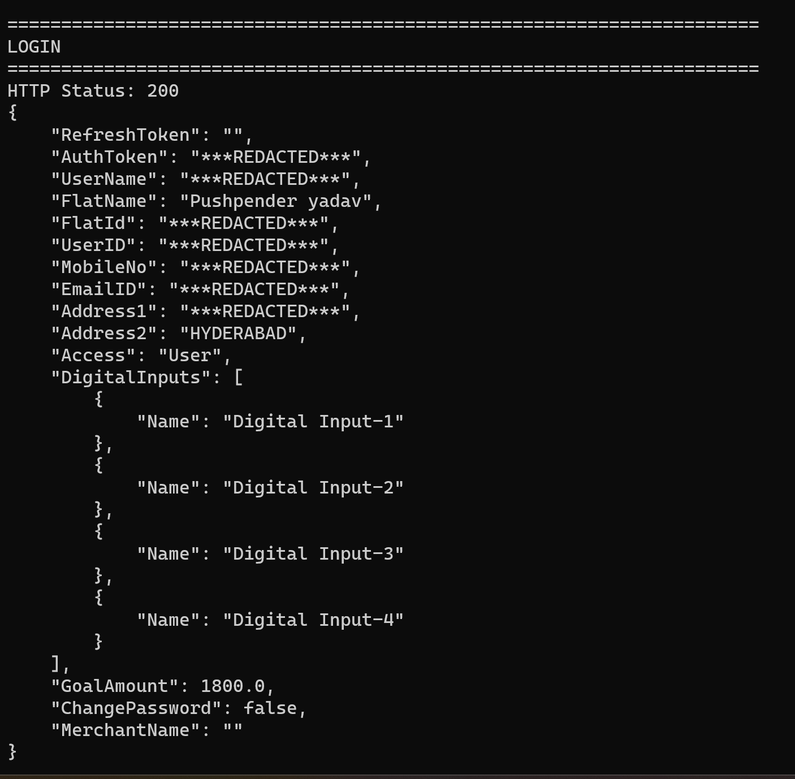
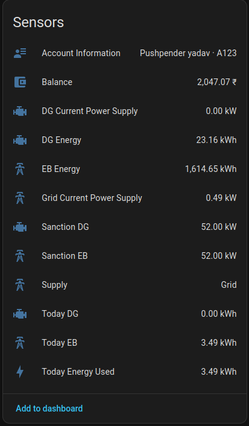

Why I Started
After moving into a new apartment, I found that all my electricity information was only available through the ElNetPPS v3 app (and MyGate). Since the apartments in my community use Elmeasure smart meters, I could check my prepaid balance, live power consumption, and daily energy usage, but only by opening those apps.

I already use Home Assistant as the central dashboard for my smart home, bringing together everything from lights and sensors to cameras and automations. Having to open a separate app just to check my electricity usage felt out of place, so I decided to bring that data into Home Assistant alongside everything else.
What I wanted
- See my prepaid balance from Home Assistant.
- Monitor live power consumption.
- Track daily electricity usage.
- Create automations based on low balance or high power usage.
- Stop opening MyGate just to check my meter.
The challenge was that Elmeasure doesn't provide a public API or an official Home Assistant integration. If I wanted the data, I'd have to understand how the Android app communicated with the backend and recreate that myself.
The Investigation Begins
This wasn't a single breakthrough. It was a series of small discoveries that gradually revealed how the Android app communicated with the backend. Every answer raised a new question, and each question led to another clue.
📦 Digging Into the APK
I started by decompiling the Android application to inspect its Java/Kotlin code. My goal wasn't to modify the app, but to analyze its Activities, network layer, API client, authentication, and encryption routines to answer a few simple questions:
- Where are requests sent?
- How does authentication work?
- Is encryption used?
- Which endpoints exist, and what parameters are mandatory?
🔍 Mapping the API
While browsing the decompiled code, I identified all the API calls. The application communicates with a backend server using HTTP POST requests. I mapped each endpoint to its specific purpose:
| Endpoint (POST) | Purpose |
|---|---|
| /api/Dashboard/login | Authenticate user |
| /api/Dashboard/GetDashboardDetails | Main dashboard information |
| /api/Dashboard/GetLiveUpdates | Live power consumption |
| /api/Dashboard/GetEnergyDashboard | Historical daily energy |
📡 Watching the Network
Static code analysis only tells part of the story, so I captured live network traffic using PCAPdroid. The capture was used to verify the request URLs, HTTP headers, Content-Type, Authorization header, payload format, and server responses. This confirmed my reconstructed requests matched the app's real behavior.

🔐 Recreating Authentication
The login request wasn't transmitted as plain JSON. The application builds a JSON payload, encrypts it using AES, encodes the encrypted bytes, and only then sends it to the server.
Once I understood this, I reproduced it in a standalone Python client. I discovered the login response returns significantly more than just an AuthToken it also returns FlatId, UserID, UserName, FlatName, and more. The token is then used for every future request.

Making Sense of the Data
Once the Python prototype was authenticating and polling the API, I had to figure out how to parse the responses in a way that made sense for Home Assistant.
Determining the Power Source (Grid vs. DG)
One interesting observation from the GetLiveUpdates endpoint is that the API only exposes a single live power value (PresentLoad), along with a string indicating the current Supply source.
To make dashboarding easier in Home Assistant, the integration uses this logic to split the data into dedicated sensors:
- If
Supply == 0➔ Route value to Grid Current Power - If
Supply == 1➔ Route value to DG Current Power
Parsing Historical Energy
While analyzing the network traffic, I noticed the official app makes calls to the GetEnergyDashboard endpoint differently depending on the user's view. It natively changes the Input parameter to fetch either weekly or monthly historical data:
energy_data = call_api(
token,
"GetEnergyDashboard",
{
"EndDate": "",
"MeterID": meter_id,
"Input": 30, # App passes 7 for weekly data, 30 for monthly data
"StartDate": ""
}
)
The response provides an array of daily totals, each containing EB (Grid), DG, and Solar values. While fetching a full month of history is great for standalone scripts, the Home Assistant integration specifically targets and extracts the latest day's values to feed Home Assistant's native "Today Energy Used" statistics.
Integration Architecture
With the API understood and the data logic mapped, converting the prototype into a proper Home Assistant integration became the final step. I implemented Config Flows for easy setup and an ELMeasureCoordinator to manage periodic polling across the endpoints.
Home Assistant
│
Config Flow
│
Username
Password
API URL
│
▼
Login Request
│
Authentication
│
▼
ELMeasureCoordinator
│
┌──────────────────┼──────────────────┐
│ │ │
▼ ▼ ▼
GetDashboardDetails GetLiveUpdates GetEnergyDashboard
│ │ │
▼ ▼ ▼
Dashboard Live Sensors Daily Sensors
│
▼
Home Assistant Entities
The Final Result
The integration now exposes everything I originally wanted natively inside Home Assistant, without requiring the official Android application.

Supported Features
- Secure authentication with token reuse & automatic polling
- Home Assistant Configuration UI
- Live power monitoring with Current supply detection
- Grid vs. DG energy attribution
- Daily energy statistics & Prepaid balance
- Account information sensors
- Adjustable refresh interval
- Optional DG & Solar sensors
Learnings
- The First Packet: Capturing that initial network request turns an intimidating black box into a completely solvable puzzle.
- Wire > Code: Decompiling APKs helps for context, but packet captures reveal what the server actually expects.
- Playground First: Testing payloads with a standalone Python script saved hours of Home Assistant restart cycles.
- Document the Quirks: Undocumented APIs have subtle flags (like
Input: 30for monthly view)—write them down immediately. - Data Sovereignty: Freeing your data from a walled garden and seeing it on your own dashboard is always worth the effort.
Open Source
I decided to open source the integration so anyone using ELMeasure can bring the same data into Home Assistant without repeating the reverse engineering work.
View the Project on GitHub